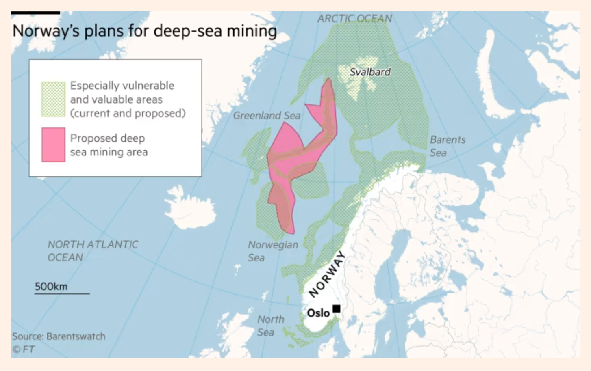

20 Deep-sea mining
Chung
As the world’s hunger for metals and minerals to go green increasingly clashes with the realities of the mining process, the deep sea has become the latest focal point. Ultimately, manufacturers aim to create a circular “closed-loop” system, where old electronics are recycled and their metals are used to build new products.
But reaching that goal is expected to take decades. Debate about whether sensitive ecosystems on land should be dug up have empowered deep-sea mining advocates. Some companies competing with The Metals Co believe that the robotic vacuum is the problem, and are offering potential solutions.
The startup Impossible Metals has developed a robotic device with a large claw that collects nodules as the claw glides along the seafloor. Using artificial intelligence, the robot’s claw is able to distinguish between nodules and aquatic life, the company says.
“From day one, we are focused on preserving the ecosystem,” said Jason Gillham, the CEO of Impossible Metals. However, while the Impossible Metals robot is battery-powered, its energy comes from a diesel generator on a ship at the ocean’s surface, fueling charges that the company’s methods are not fully green.
A Japanese company plans to start mining next year in territorial waters controlled by Tokyo. Chinese officials have acknowledged they lag behind other nations in the deep-sea race, but are vowing to vigorously compete in this “new frontier for international competition.” China is already exploring a massive part of the Pacific seabed west of Hawaii - an area that dwarfs the CCZ. Norway, already a prolific offshore oil producer, is on track to be the first country to allow deep-sea mining if its parliament approves, as expected, plans to mine hydrothermal vents.
For now, the ISA’s members are hotly debating the best standards for deep-sea mining.
“Nothing we do will have zero impact,” said Joe Carr, a mining engineer with the metals consultancy Axora. “We’re going to need mining for the green energy transition.”
Chung (2023) The promise and risks of deep-sea mining (scroll-graphics)
Tooze
Norway has secured a parliamentary majority for its plans to open up for deep-sea mining despite opposition from environmentalists and the fishing industry, who warn that the move risks further damage to fragile oceans. The country’s minority centre-left government on Tuesday said it had won the support of the two main opposition centre-right parties for deep-sea mining exploration but that there would be tough environmental criteria to proceed with any extraction. “The renewable green industries run on minerals. This is an important contribution internationally,” said Bård Ludvig Thorheim, an MP from the main opposition Conservatives. But the decision by Norway, western Europe’s largest petroleum producer, drew fierce criticism from environmentalists as the Nordic country aims to become the first in the world to conduct deep-sea mining on a commercial scale.
Oslo’s plans could also generate geopolitical tensions. The area it proposes to open up to exploration, in the Barents Sea and Greenland Sea, is close to Svalbard, the Norwegian archipelago in the Arctic. Norway believes it has exclusive mining rights off the Arctic islands, a position disputed by Russia, the EU and UK.
